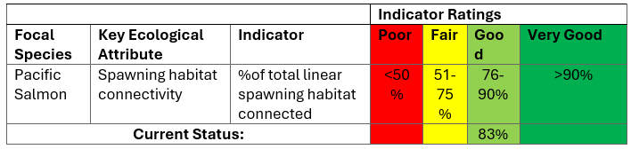
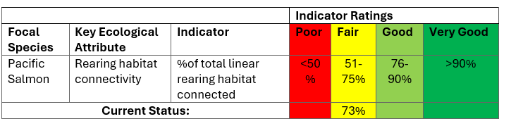
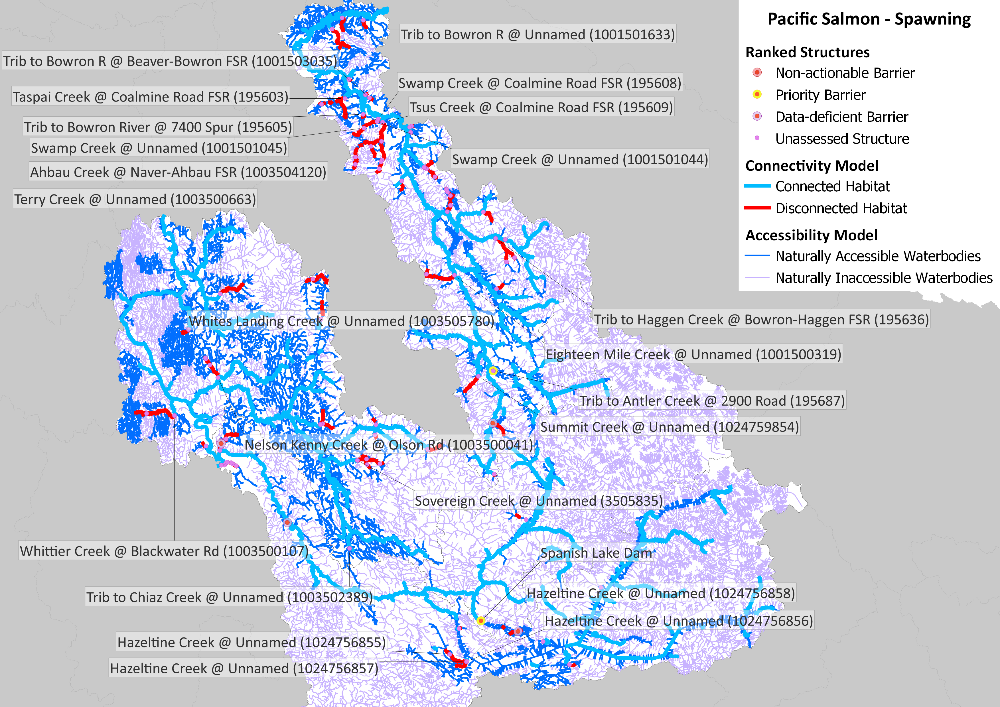
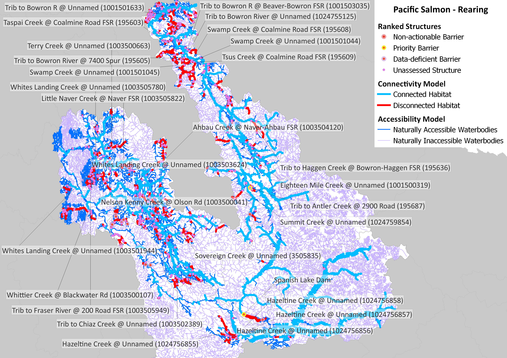

Barrier ID | Site Name | Watershed Name | Structure Status | Model Rank | Actual Habitat Upstream of Structure | Average Habitat Upstream of Structure |
|---|---|---|---|---|---|---|
195603 | Taspai Creek @ Coalmine Road FSR (195603) | BOWR | 1 | 26.57 | 26.570000 | |
195609 | Tsus Creek @ Coalmine Road FSR (195609) | BOWR | 2 | 19.49 | 19.490000 | |
c0115f78-8f0c-4790-8484-e2f00cc80266 | Spanish Lake Dam | CARR | Priority barrier | 3 | 31.91 | 31.910000 |
1001501633 | Trib to Bowron R @ Unnamed (1001501633) | BOWR | 4 | 20.46 | 20.460000 | |
1003504120 | Ahbau Creek @ Naver-Ahbau FSR (1003504120) | COTR | 5 | 21.68 | 21.680000 | |
1003505835 | Sovereign Creek @ Unnamed (3505835) | COTR | 6 | 12.96 | 12.960000 | |
1024756855 | Hazeltine Creek @ Unnamed (1024756855) | QUES | 7 | 14.52 | 6.950000 | |
1024756856 | Hazeltine Creek @ Unnamed (1024756856) | QUES | 7 | 0.13 | 6.950000 | |
1024756857 | Hazeltine Creek @ Unnamed (1024756857) | QUES | 7 | 13.02 | 6.950000 | |
1024756858 | Hazeltine Creek @ Unnamed (1024756858) | QUES | 7 | 0.13 | 6.950000 | |
1003500107 | Whittier Creek @ Blackwater Rd (1003500107) | COTR | 8 | 10.68 | 10.680000 | |
195636 | Trib to Haggen Creek @ Bowron-Haggen FSR (195636) | BOWR | 9 | 11.23 | 11.230000 | |
1001500319 | Eighteen Mile Creek @ Unnamed (1001500319) | BOWR | 10 | 11.31 | 11.310000 | |
1003500663 | Terry Creek @ Unnamed (1003500663) | COTR | 11 | 11.42 | 11.420000 | |
1003502389 | Trib to Chiaz Creek @ Unnamed (1003502389) | COTR | 12 | 7.60 | 7.600000 | |
1001501044 | Swamp Creek @ Unnamed (1001501044) | BOWR | 13 | 7.21 | 6.490000 | |
1001501045 | Swamp Creek @ Unnamed (1001501045) | BOWR | 13 | 10.97 | 6.490000 | |
195608 | Swamp Creek @ Coalmine Road FSR (195608) | BOWR | 13 | 1.29 | 6.490000 | |
195605 | Trib to Bowron River @ 7400 Spur (195605) | BOWR | 14 | 7.76 | 7.760000 | |
1024759854 | Summit Creek @ Unnamed (1024759854) | BOWR | 15 | 10.04 | 10.040000 | |
1003505822 | Little Naver Creek @ Naver FSR (1003505822) | COTR | 16 | 6.61 | 6.610000 | |
1003500041 | Nelson Kenny Creek @ Olson Rd (1003500041) | COTR | 17 | 4.61 | 4.610000 | |
1001503035 | Trib to Bowron R @ Beaver-Bowron FSR (1001503035) | BOWR | 18 | 2.14 | 5.145000 | |
1024755125 | Trib to Bowron River @ Unnamed (1024755125) | BOWR | 18 | 8.15 | 5.145000 | |
1003505949 | Trib to Fraser River @ 200 Road FSR (1003505949) | COTR | 19 | 6.72 | 6.720000 | |
1003501944 | Whites Landing Creek @ Unnamed (1003501944) | COTR | 20 | 4.54 | 3.536667 | |
1003503624 | Whites Landing Creek @ Unnamed (1003503624) | COTR | 20 | 3.24 | 3.536667 | |
1003505780 | Whites Landing Creek @ Unnamed (1003505780) | COTR | 20 | 2.83 | 3.536667 | |
195687 | Trib to Antler Creek @ 2900 Road (195687) | BOWR | Priority barrier | 56 | 2.70 | 1.350000 |
Current Connectivity Status
Two Key Ecological Attributes (KEAs) were selected to assess the current connectivity status of the watershed for each focal species: (1) available spawning habitat and (2) available rearing habitat. KEAs are the key aspects of anadromous salmon habitat that are being targeted by this WCRP. For each KEA, an associated indicator was assigned to measure the status of that KEA. The connectivity status indicators were used to establish goals to improve key habitat connectivity over time and is the baseline against which progress is tracked over time.

In the LDN watersheds, 590.65 km of Pacific salmon spawning habitat are currently connected to the ocean and 122.44 km are disconnected from it. This means that 82.8% of the 713.09 km of total habitat is connected.
Table 2: Connectivity status assessment for rearing habitat in the LDN watersheds. The rearing habitat KEA is evaluated by dividing the length of linear rearing habitat that is currently accessible to focal species by the total length of all linear rearing habitat in the watershed.

In the LDN watersheds, 896.57 km of Pacific salmon rearing habitat are currently connected to the ocean and 334.17 km are disconnected from it. This means that 72.8% of the 1230.74 km of total habitat is connected.
Structure Count
In the LDN watersheds, 112 structures potentially disconnect Pacific salmon spawning habitat. Of these, 2 are identified as barriers in need of rehabilitation (priority barriers), 0 are identified as barriers that do not warrant rehabilitation (non-actionable), and 110 require further field assessment.
In the LDN watersheds, 534 structures potentially disconnect Pacific salmon rearing habitat. Of these, 2 are identified as barriers in need of rehabilitation (priority barriers), 0 are identified as barriers that do not warrant rehabilitation (non-actionable), and 532 require further field assessment.
Maps


Habitat Accumulation Curves